聚类分析是将相似的对象归为一类，使得同一类内的对象相似度尽可能大，不同类之间的对象相似度尽可能小。这是无监督学习的核心方法。
帮助企业进行精准用户分群、商品分类、市场细分，是数据驱动运营的核心技术。
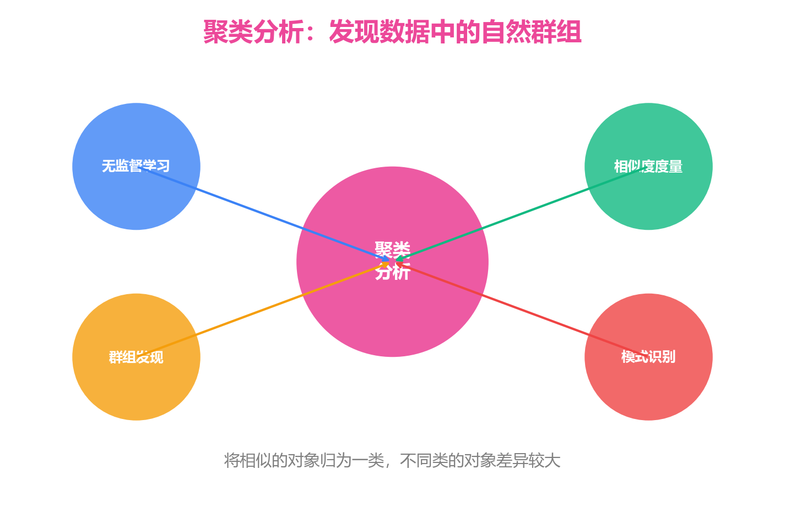
基于RFM + 行为特征进行K-Means聚类
基于购买记录进行商品关联聚类
DBSCAN密度聚类自动发现离群点
简单高效，适合大规模数据；收敛速度快；对密集球形数据效果好
需要预设K值；对初始中心敏感；只能发现球形簇；易受噪声和异常值影响
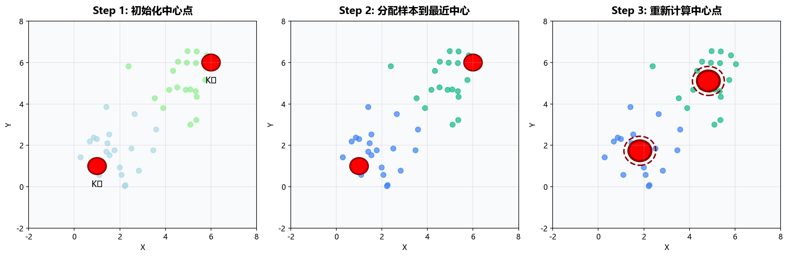
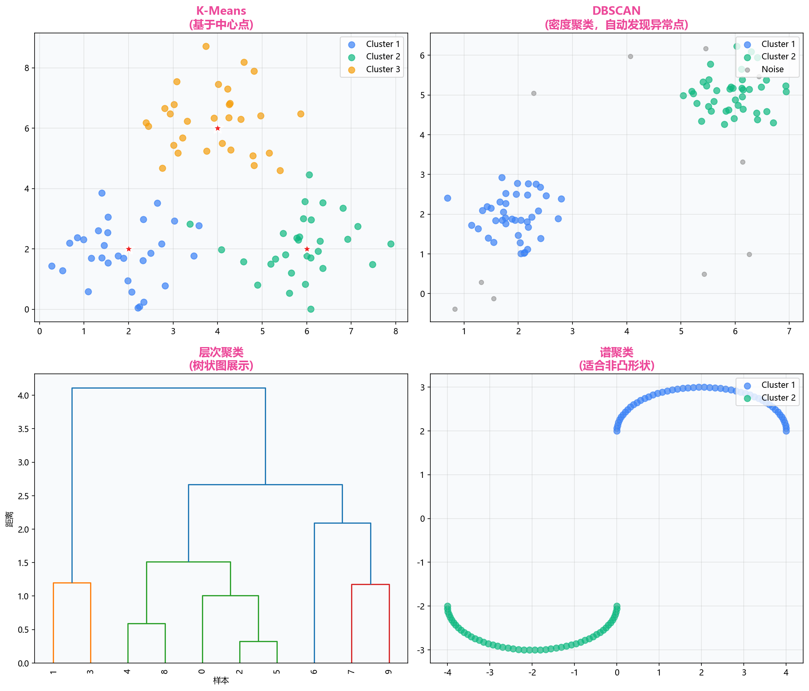
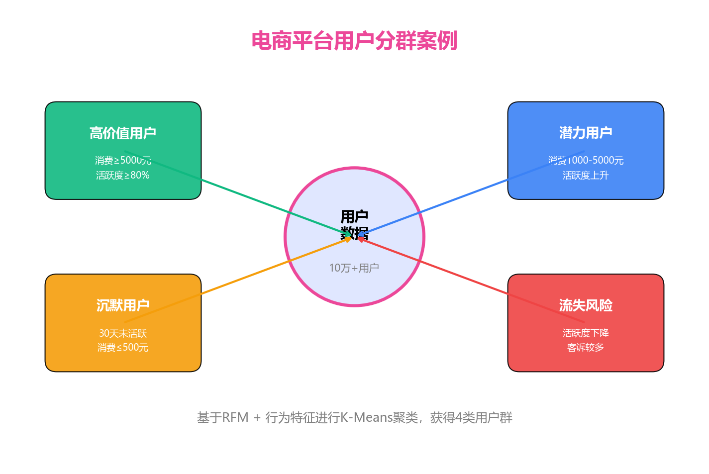
基于RFM + 行为特征进行K-Means聚类，实现精细化运营
衡量样本与自身簇的紧密程度 vs 与其他簇的分离程度
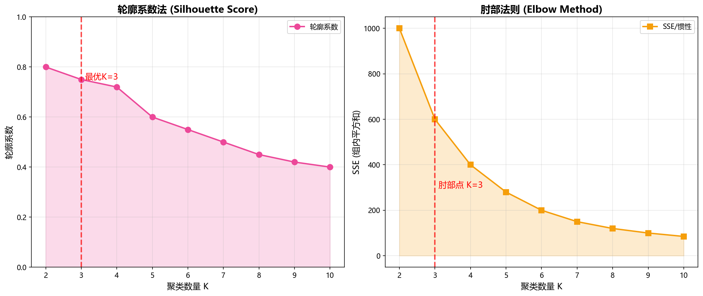
绘制SSE随K变化的曲线，选择"肘部"点作为最优K值
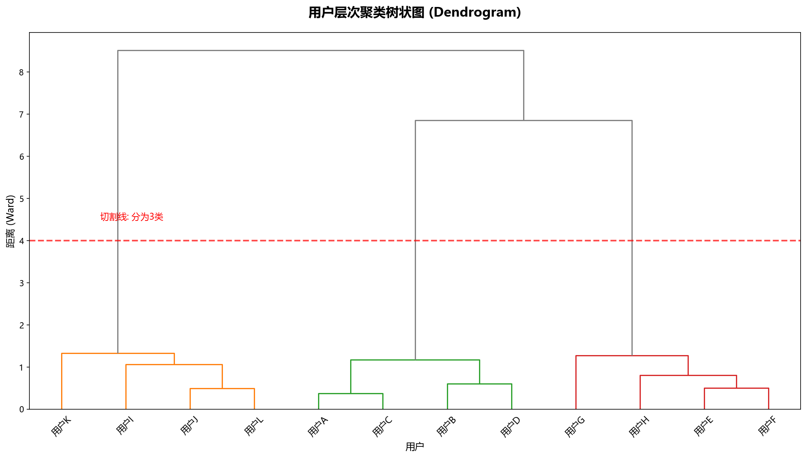
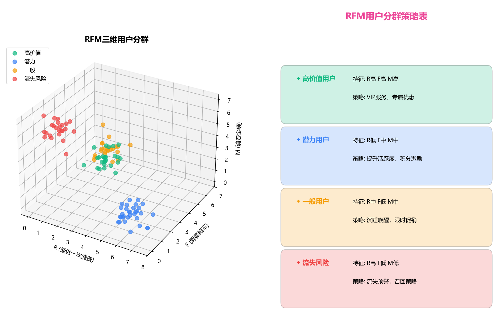
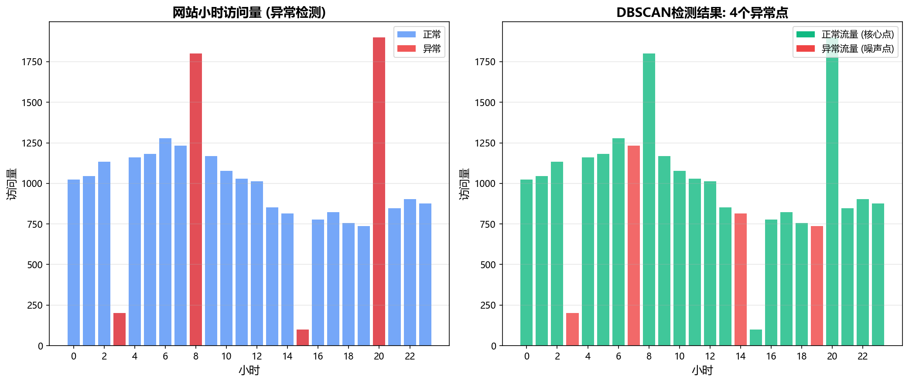
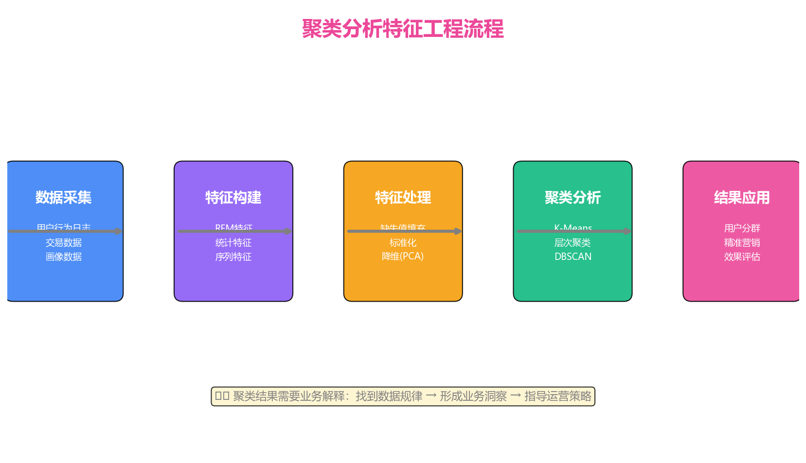
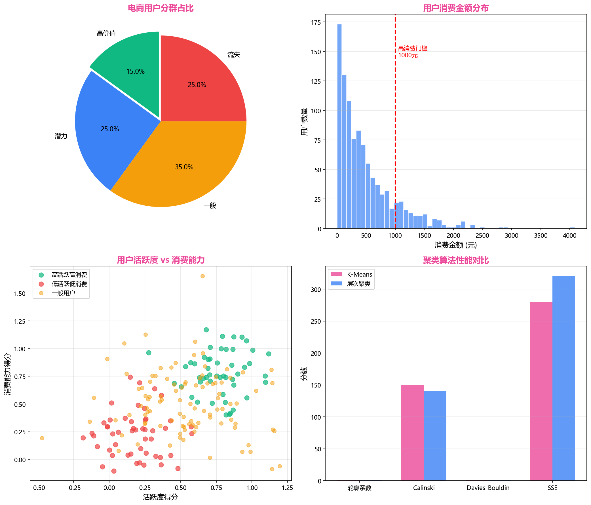
针对潜力用户提升活跃度，针对高价值用户提供VIP服务
让AI帮你理解业务逻辑、解释聚类结果、生成运营策略
使用AI辅助，分析效率提升50%以上
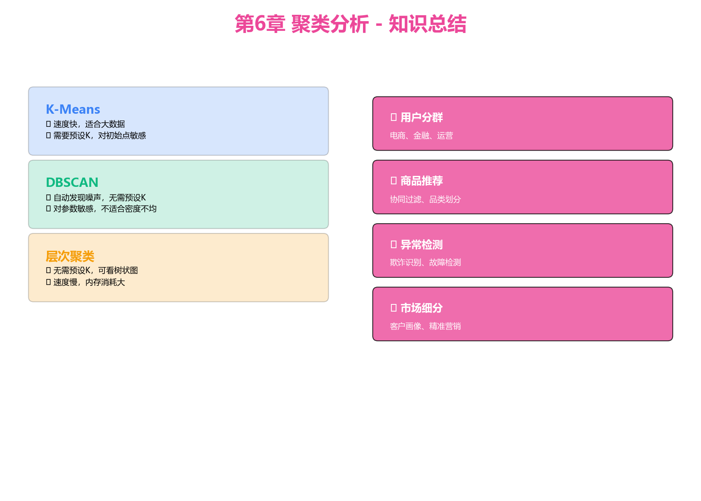
先用K-Means快速验证，再根据业务选择最优算法
使用提供的用户行为数据，完成以下任务：
学习如何设计实验、进行统计检验、用数据驱动决策
感谢学习！
掌握聚类分析，让数据发现隐藏的规律